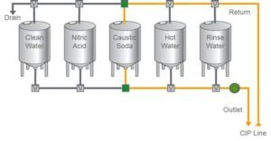

CIP minimiert Fehler durch eine automatisierte Reinigung, da sie die Chance auf menschliches Versagen, das zu einem unsicheren Produkt führen könnte, verringert. Unser Team kennt sich dank Schulungen genau mit CIP Systemen aus. Cleaning In Place (CIP) wird in der Lebensmittelindustrie oft angewendet. Bei dieser Methode geht es darum effektiv mit Ihrer Ausrüstung zu reinigen. CIP Ausrüstung hilft dabei die Reinigungsmethode zu kontrollieren, zu überwachen und zu dokumentieren. Da Cleaning-In-Place Technologien effizienter und kosteneffektiver sind, sichern sie nicht nur das Produkt, sondern machen den gesamten Reinigungsprozess effektiver. Dank unserem Team-Partner Projekt bieten wir unseren Kunden ein Prozessleitsystem, das für die vollständige Digitalisierung der Produktion steht und die Fertigung in ein neues Zeitalter bringt.

Mehr Produktionszeit: Weniger Produktionszeit wird für die Reinigung aufgewendet und mehr Zeit in die Produktion gesteckt. Produktqualität: Verlässliches und wiederholtes Reinigen führt zu einer nachhaltigen Produktqualität und Einheitlichkeit, weniger Reklamationen und größeres Markenvertrauen. Mitarbeitereffizienz: Mehr Arbeitszeit kann für produktive und profitable Aktivitäten aufgebracht werden, da unsere Experten für die Reinigung bereitstehen. Energieeinsparungen: Wasser uns Energie einsparen.